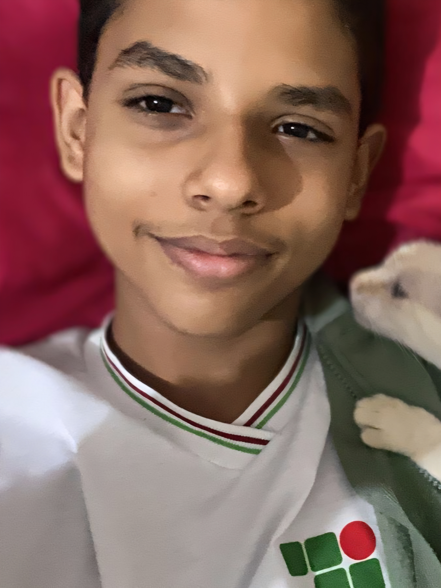

01 — Leandro Miguel
Co-fundador

Informações
- Apelido
- Leleco Peteleco
- Especialidade
- Criar ideias completamente aleatórias.
- Função no Yanakaon
- Criar projetos, ideias e conteúdo.
Contribuições
- Criou o nome Yanakaon.
- Deu muitas ideias para os projetos.
- Fez Pixel Arts.
- Produziu soundtracks.
- Trabalhou no Silverinha Simulator 3000.